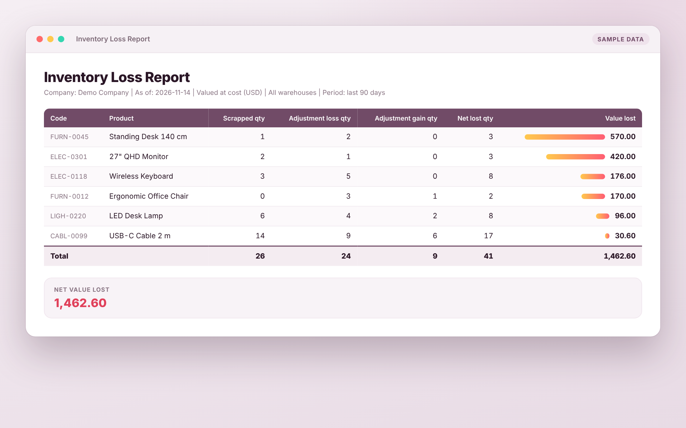

One wizard, four reports for Odoo 17 Inventory: Aging, FSN, ABC and Inventory Loss. Print them as PDF or export them to Excel in a few clicks.
Odoo 17.0
PDF & Excel
Lot / serial aging
English + French
LGPL-3
THE PROBLEM
Stock is cash. Old stock is cash that stopped moving.
Odoo tells you what you have. It does not tell you how long it has been sitting there, what sells fast, which products carry your revenue, or how much you lose to scrap and inventory adjustments. This module answers those four questions.
FOUR REPORTS
Everything in one wizard
Open Inventory → Reporting → Aging & Analysis, pick a report, set your filters, press Generate.
AGE
Inventory Aging
How old is the stock you hold today, and what does it cost to keep it?
FIFO logic: stock on hand is made of the most recent receipts
Optional lot / serial number detail
Counts the products fully stuck in the oldest bucket
FSN
FSN Analysis
Which products are Fast, Slow or Non-moving?
Turnover = quantity sold / quantity on hand
Adjustable look-back period and Fast threshold
Last sale date and days since last sale
Number of products and stock value per class
ABC
ABC Analysis
Which few products make most of your revenue?
Pareto ranking on confirmed sales revenue
Default bands A 80% / B 15% / C 5%, fully adjustable
Share and cumulative share per product
Revenue and product count per class
LOSS
Inventory Loss
What do scrap and inventory adjustments really cost you?
Scrapped quantity, adjustment losses and gains
Net lost quantity and value lost per product
Sorted by value lost, biggest leaks first
Total net value lost for the period
SEE IT
Clear, colour-coded, ready to share
Illustrations below use sample data.
One simple wizard
Choose the report, the date, the output format and your filters: warehouses, locations, product categories or specific products. Aging buckets, look-back period, FSN threshold and ABC bands are all adjustable.
Aging at a glance
A heat map shows exactly where each product’s stock sits by age. Totals, the value tied up in the oldest bucket and the number of obsolete candidates are summed up underneath.
Spot the products that stopped selling
Every product is classed Fast, Slow or Non-moving with its turnover, last sale date and the value of the stock behind it.
The 80/20 of your catalogue
A Pareto chart ranks products by revenue and draws the A, B and C zones, so you know where availability matters most.

Follow the leaks
Scrap and inventory adjustments are consolidated per product and valued, with the biggest losses on top.
UNDER THE HOOD
Numbers you can explain to your auditor
Transparent rules, no black box.
AGING
First in, first out
On-hand quantity at the chosen date is the sum of done receipts minus done outgoing moves. That quantity is then allocated to the most recent receipts first, and each unit is aged from its receipt date. Transfers inside your own warehouses never reset the age.
FSN
Turnover rule
Sales are done deliveries to customers during the look-back period. No sales means Non-moving. A turnover at or above your threshold (1.0 by default) means Fast. Anything in between is Slow.
ABC
Cumulative revenue
Products are ranked by untaxed revenue of confirmed sales orders. A product belongs to the class where it starts: A below 80% cumulative, B below 95%, C afterwards. Products without sales are C.
FEATURES
Built for daily use
✓ Date-based: analyse the stock as of any date
✓ Filter by warehouse, location, category or product
✓ Lot / serial number level aging
✓ Quantity and value in every aging bucket
✓ PDF in landscape A4 and Excel (XLSX) export
✓ Freeze panes, number formats and totals in Excel
✓ All thresholds adjustable on the wizard
✓ Multi-company aware: one company per run
✓ Ready-to-use French translation (fr.po)
✓ Lightweight: no external Python library to install
✓ Access controlled by standard Odoo security groups and menus
✓ Clean, readable code with unit-tested logic
QUICK START
Up and running in four steps
1
Install
Copy the module to your addons path, update the Apps list and install it.
2
Open the menu
Inventory → Reporting → Aging & Analysis, then pick a report.